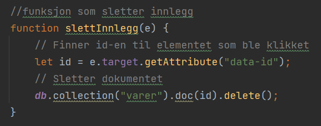

Algoritmer
Hente ut data
Hver gang et nytt innlegg skal skrives ut, lages det et nytt element for innlegget ved ved bruk av createElement(). Nye elementer lages også på samme måte for alt av informasjon som ligger i databasen, som blir lagt til under elementet ved bruk av appendChild()-funksjonen. Hvert av innleggene legges inn i et div-element med flexbox-egenskaper slik at innleggene legger seg bortover på en linje.
Legge til data
Jeg lagde en knapp som, når den trykkes, åpner en popup med diverse input-felter. Lager deretter et dokument med input-verdiene i Firebase.
Slette data
Et av elementene i hvert innlegg er en knapp som kjører funksjonen slettInnlegg. Det er en veldig enkel funksjon som først finner id-en til dokumentet og deretter sletter det fra Firebase.
Sortere data
Hver gang innleggene skal skrives ut, blir de først sortert. For å sortere dokumentene når de hentes ut ifra databasen, brukes orderBy() som velger hvilken av verdiene dokumentene skal sorteres etter. Dersom de skal sorteres etter dato, skjer det ved sortering etter antall millisekunder siden 1. januar 1970 (getTime() ).

Nettsiden gir også mulighet til å kun skrive ut innleggene med en viss tag. Programmet sjekker først om bruker har søkt på noen tags, og dersom det stemmer, vil en for-løkke se igjennom alle dokumentene og kun plukke ut de som har den samme taggen.

Sortere større mengder data
Når man skal sortere større mengder data, bruker man ofte mer effektive algoritmer. Et eksempel er insertion sort, der det skilles mellom sortert og usortert data. Se for deg en tallrekke som du skal sortere i stigende rekkefølge. Programmet trenger ikke nødvendigvis å sammenligne alle dataene, men kun se igjennom ett og ett tall frem til den finner et tall som er større.